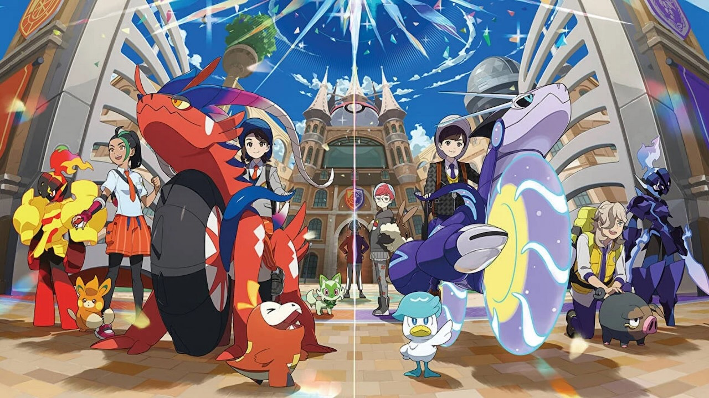

Pokémon Écarlate
Ma Note

Mon Avis
J'ai adoré le jeu, le deuxième jeu Pokémon en monde ouvert, une liberté d'exploration
très appréciable ! On notera la qualité graphique du jeu très décevante, et les nombreux
clippings. Mais bon, on est sur Switch donc bon... on fait avec malheureusement.
À part ça j'ai adoré faire le jeu, l'histoire est correcte sans plus. Ectoplasma et Embrylex
sont présents donc je suis content. On espère une nette augmentation graphique pour les prochains
Pokémon en open world. Et on espère encore plus des sorties PC, mais ça je peux toujours rêver.